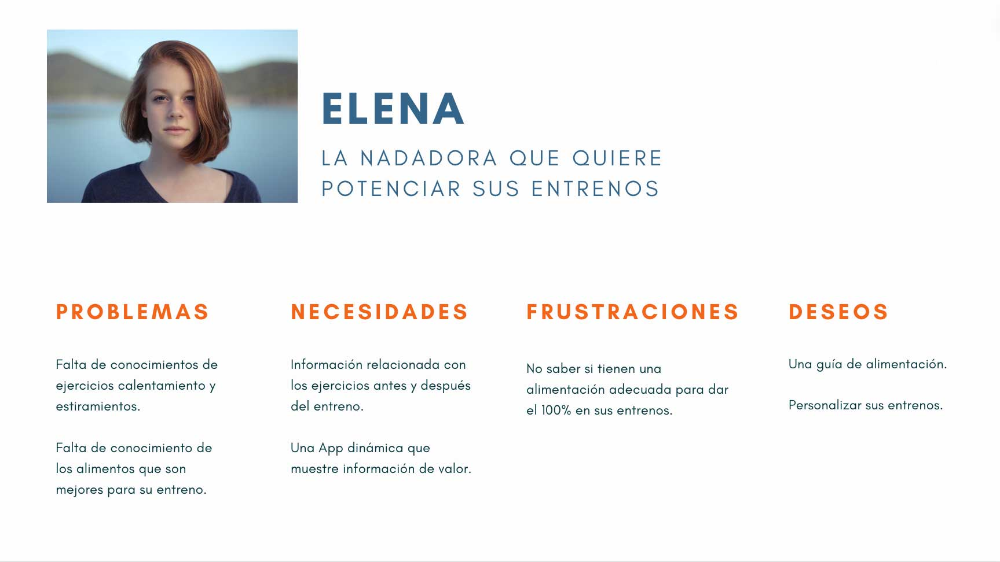
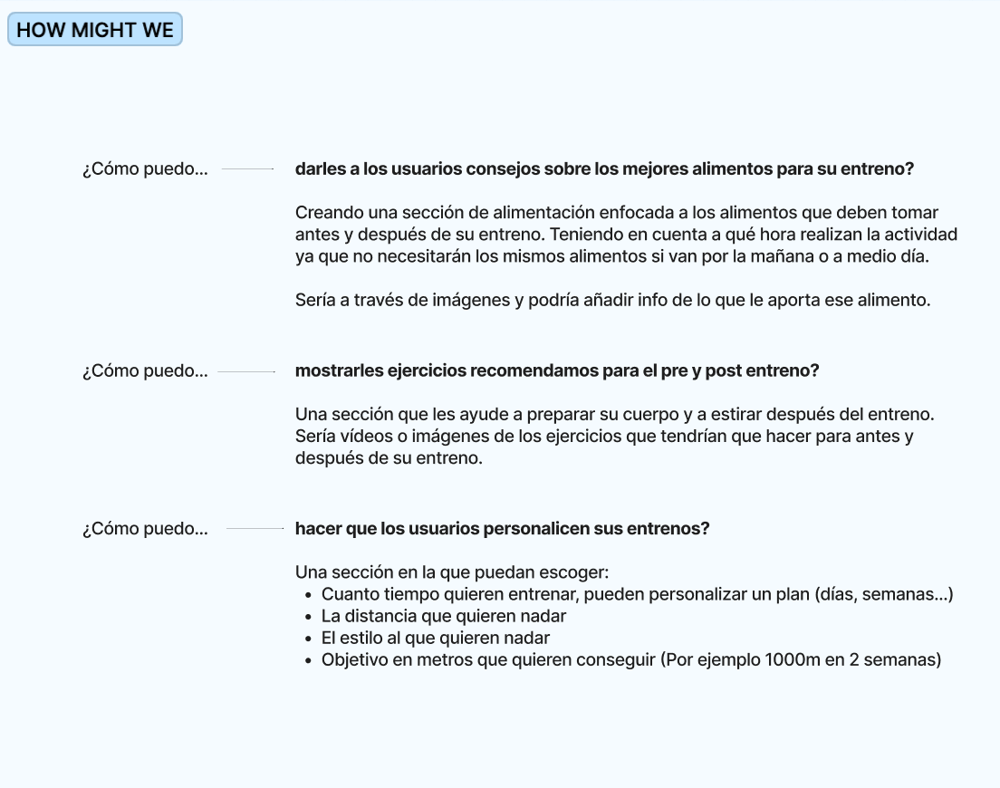
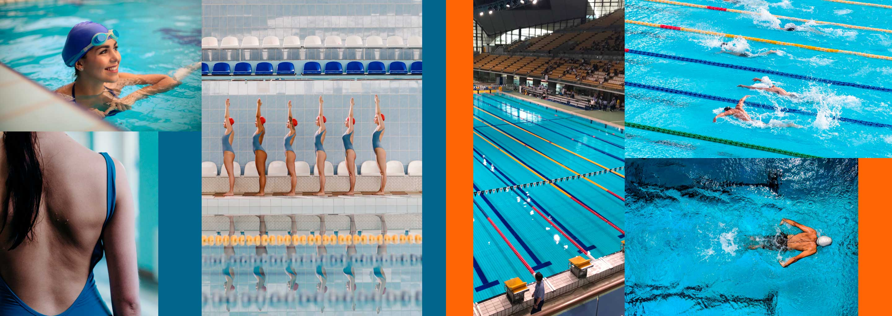
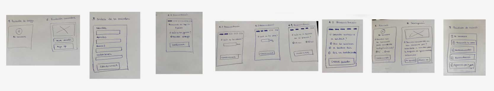
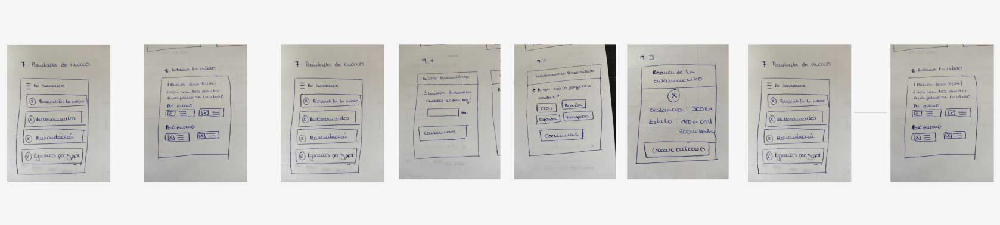
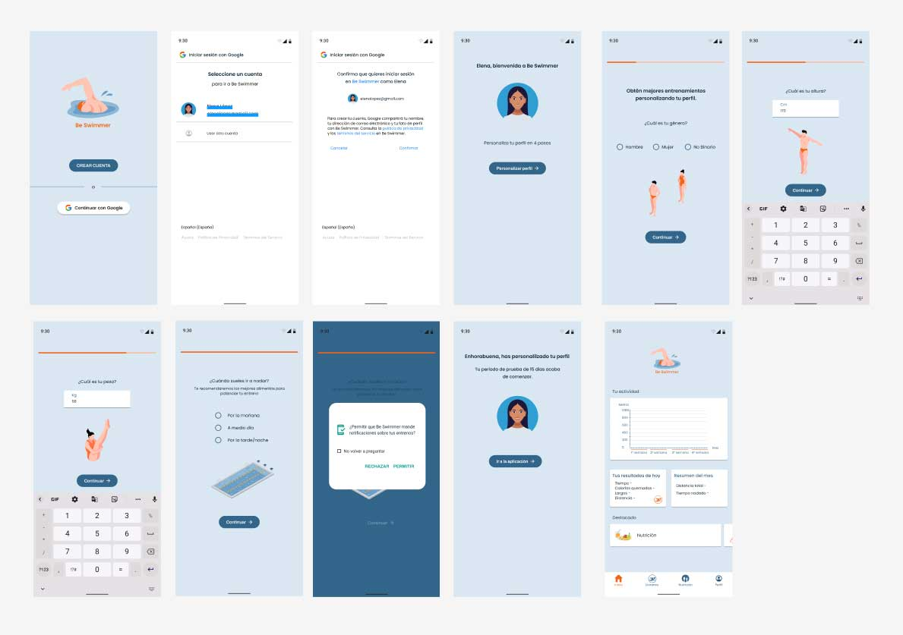
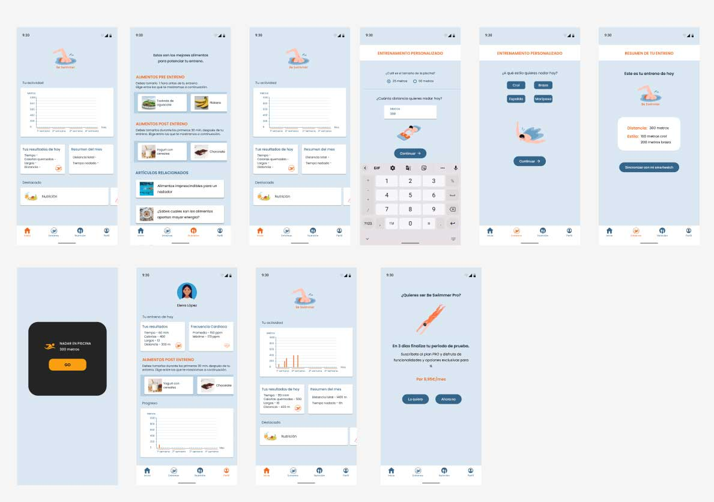

Una app para potenciar tus entrenos
Be Swimmer
Herramientas utilizadas
Todo el proceso de este proyecto se basó en las fases del Design Thinking, que son 5: Empatizar, Definir, Idear, Prototipar y Testear.
Se pusieron en practica herramientas que pertenecen a las diferentes fases como son las siguientes:
- - Desk Research
- - Entrevistas y encuestas
- - Benchmark
- - Empathy Maps
- - HOW MIGHT WE
- - User persona
- - User flow
- - Etc.
Objetivo del proyecto
Hacer una aplicación que tenga que ver con la actividad deportiva o el bienestar personal.
Contexto del proyecto
Este proyecto se basa en torno a una Wellnes App que aún no existe en el mercado.
El objetivo es conseguir diseñar una app que cumpla con las necesidades que tiene el usuario, y de esta manera potenciar su uso y sus descargas. En este caso la App a desarrollar es de natación.
Research
Mi investigación se ha centrado en personas que hacen deporte, así como, usuarios específicos que practican natación. Los datos obtenidos de las encuestas y entrevistas revelan que un 65% (de un total de 50 personas practican deporte). La natación ocupa el 4º lugar entre los deportes más practicados, es un deporte muy recomendado ya que es de bajo impacto y es muy completo
Las entrevistas y encuestas me llevaron a confirmar mis hipótesis, tras realizar un análisis de la competencia y ver qué podría necesitar el usuario en una aplicación.
El problema
Los usuarios que no utilizan una app para registrar sus entrenos es porque no cumplen las necesidades de los mismos. Los principales problemas detectados son los siguientes:
- - Saber que tipo de alimentos son mejor tomar antes y después del entreno
- - Información sobre ejercicios de calentamiento y estiramiento
- - Poder personalizar sus entrenos
El problema más determinante fue el de la alimentación, ya que deporte y alimentación están muy relacionados
Definición
Usuario
Para poder entender bien todos los resultados obtenidos, creé mi user persona.
Elena practica natación y requiere más información sobre varios aspectos, entre ellos la alimentación correcta para antes y después de sus entrenos.
A continuación de crear mi user persona y tener detectados los problemas, hice el HMW
Solución - Propuesta de valor
Mi propuesta de valor es Una app que muestre los alimentos que se deben tomar antes y después del entreno según el momento del día en el que se haga la actividad.
Inspiración
Una vez encontrado el principal problema y teniendo la propuesta de valor para resolverlo, pasé a buscar inspiración para el diseño de la app.
El siguiente paso a dar fue definir el user flow para poder pintar las pantallas en low -fi
User Flow

Estas son las primeras pantallas para ir concretando el flow del usuario en la app
Onboarding App
Uso de la App
Tras algunos cambios en el flujo del usuario y añadir otros elementos a la aplicación que resultarían de interés para el usuario. Pasé a realizar el prototipo en Hi-fi
El resultado de la App Be Swimmer sería este:
Onboarding Hi-fi
Elena se descarga la app Be Swimmer, se registra con Google porque para ella es mucho más cómodo y a continuación, personaliza su perfil en 4 sencillos pasos. Una vez hecho esto ya estaría registrada en Be Swimmer y empezaría su periodo de prueba de 15 días.
Interacción con la aplicación Hi-fi
Elena decide ir a nadar, pero primero consulta qué tipo de alimentos son mejores para antes de ir a entrenar y finalmente se decide por unas tostadas con aguacate. Y se dispone a personalizar su entreno eligiendo los metros que quiere nadar además a qué estilos lo hará. Espera a llegar a la piscina para sincronizar su entreno. Una vez hecho el entreno en Be Swimmer verá un resumen de su entrenamiento, así cómo, lo alimentos mas convenientes para después del entreno.
En este proyecto había que especificar una manera de monetizar, en mi caso, es a través de suscripción. El usuario puede disfrutar de 15 días gratis pero una vez pasado este plazo o se queda con las funciones básicas o se suscribe, al suscribirse tendrá acceso a dietas y alimentación personaliza para potenciar sus entrenos, tal y como los usuarios demandaban.